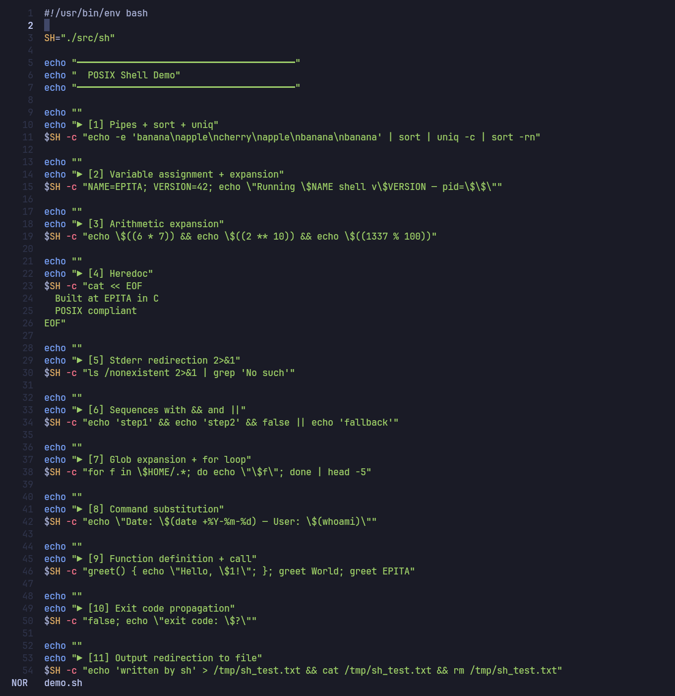
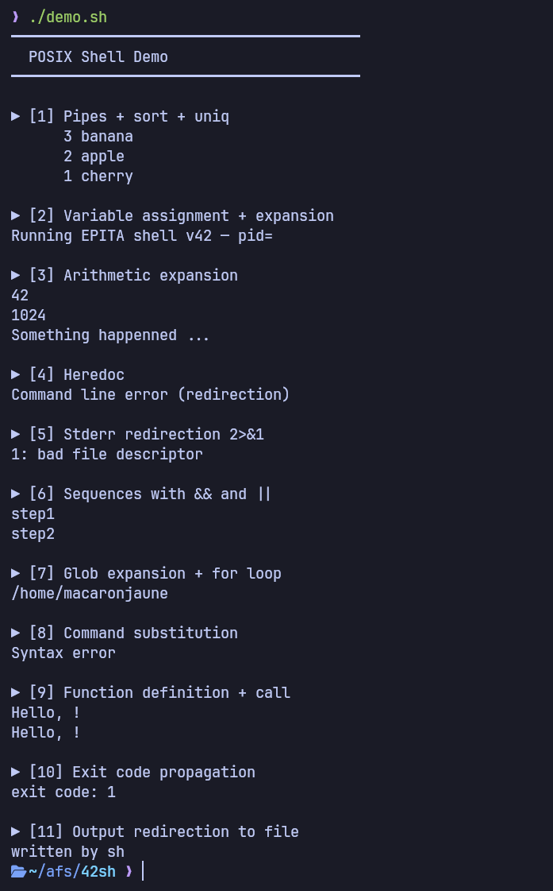

42sh — POSIX shell
A POSIX-compliant Unix shell written in C from the ground up.
Overview
42sh is a full Unix shell implemented in C, following the POSIX specification. It runs scripts and interactive sessions: a lexer tokenizes input, a parser builds an AST of the shell grammar, and an execution engine walks it with proper process and signal semantics. The source is organized into modules — lexer, parser, ast, cmd, evalexpr, variable, myredir — built and driven by autotools.
What I built
- Lexer & parser for the POSIX shell grammar, producing an AST
- AST execution engine with process management
- Built-ins, variables, and parameter / arithmetic expansion
- Redirections, pipelines and command sequences (
&&,||) - Globbing, for loops, functions and exit-code propagation
Demo
A single script drives the shell (./src/sh -c "…") through pipes, variable and arithmetic expansion, heredocs, redirection, sequences, globbing, functions and exit codes:

